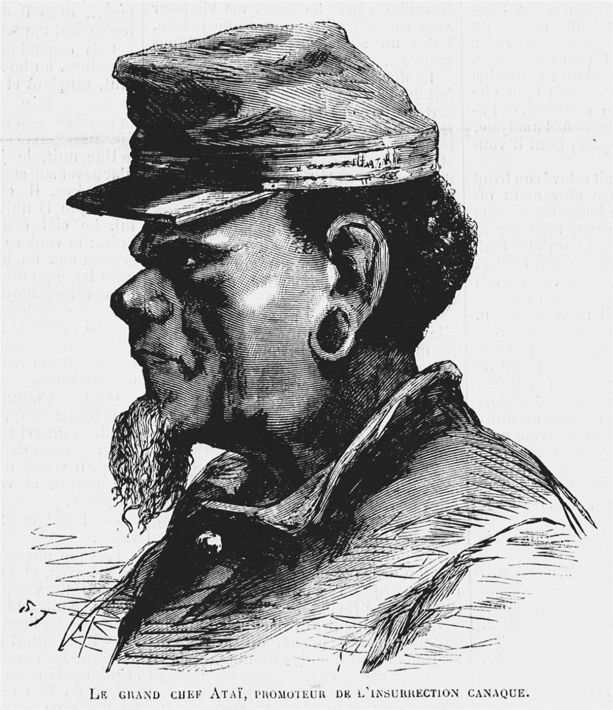
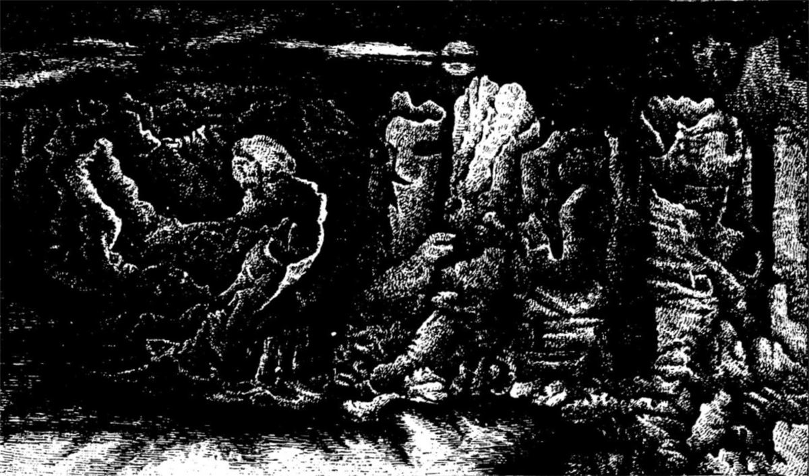
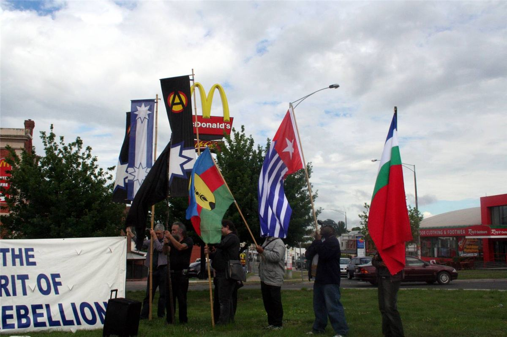

Mamie a appris le mot « Kanaky » dans les meetings de soutien des années 1980, quand des camarades revenaient de Nouméa avec des badges du FLNKS et des récits de barrages. À l'autre bout du monde, la France garde une colonie de peuplement, et elle s'y comporte comme une puissance coloniale : terres prises, révoltes noyées dans le sang, gendarmes par milliers. Cette histoire, on l'apprend rarement à l'école. Elle nous concerne pourtant directement : c'est notre État qui la mène.
1853 : une colonie de peuplement et de bagne
La France prend possession de la Nouvelle-Calédonie en 1853. Très vite, l'administration déclare que toutes les terres appartiennent à l'État, puis enferme les Kanak dans des « réserves » (1868) pour distribuer le reste aux colons. De 1861 à 1877, les terres des colons passent d'environ 27 000 à 150 000 hectares. La découverte du nickel, en 1870, accélère tout.
C'est aussi une colonie pénitentiaire : bagnards de droit commun, puis communardes et communards déportés après 1871, et insurgés kabyles de la révolte de 1871. À partir de 1887, le code de l'indigénat s'applique pleinement : les Kanak deviennent des « sujets » sans droits civils, soumis aux punitions du gouverneur, au travail forcé et à l'interdiction de circuler. Il ne sera aboli qu'entre 1944 et 1947.
1878 : la guerre d'Ataï

Le 25 juin 1878, des clans de la région de La Foa se soulèvent. Leur figure est le grand chef de Komalé, Ataï ; les Kanak appellent ce soulèvement la guerre d'Ataï. Les insurgés attaquent les gendarmeries et les fermes des colons. La répression est terrible : l'armée, des colons armés, des bagnards et des auxiliaires kanak d'autres clans traquent les révoltés. Ataï est tué le 1er septembre 1878 et décapité ; sa tête est envoyée à Paris. Elle ne sera rendue à son peuple qu'en 2014.
Bilan : environ 200 Européens et 800 à 1 600 Kanak tués, des villages brûlés, des terres confisquées, et un millier de Kanak déportés dans d'autres îles. Les chefs rebelles sont exécutés sans jugement. Une prime est même versée pour les oreilles, puis les têtes coupées.
Louise Michel du côté des Kanak
Parmi les communards déportés, beaucoup prennent le parti des colons, et certains participent à la répression. Louise Michel fait l'inverse. Déportée en 1873, elle apprend une langue kanak, recueille les contes et les chants, et prend la défense des insurgés de 1878. Installée ensuite à Nouméa, elle enseigne le dimanche aux adultes kanak. Elle publie en 1885 Légendes et chants de gestes canaques. C'est là-bas, dit-on, qu'elle devient anarchiste.

1969-1984 : de la revendication à l'indépendance
À la fin des années 1960, des étudiants kanak revenus de France après Mai 68 fondent les Foulards rouges (1969), puis le Groupe 1878 (1971), qui réclame la restitution des terres. En 1975, Jean-Marie Tjibaou organise le festival Mélanésia 2000 pour affirmer l'identité kanak. L'Union calédonienne se prononce pour l'indépendance en 1977. En face, la droite locale de Jacques Lafleur s'organise. En 1981, le militant indépendantiste Pierre Declercq est assassiné.
Le 24 septembre 1984, les indépendantistes fondent le Front de libération nationale kanak et socialiste (FLNKS). Il appelle au boycott actif des élections du 18 novembre 1984.
1984-1988 : les « Événements »
Le 18 novembre 1984, à Canala, Éloi Machoro brise l'urne d'un coup de hache : l'image fait le tour du monde. Des barrages se dressent partout. Le 1er décembre, Jean-Marie Tjibaou proclame le Gouvernement provisoire de Kanaky. Le 5 décembre, près de Hienghène, des colons tendent une embuscade à des militants du FLNKS : dix morts, dont deux frères de Tjibaou. Les tueurs seront acquittés en 1987 au nom de la légitime défense. « La chasse au Kanak est ouverte », dit alors Tjibaou.
Le 12 janvier 1985, Éloi Machoro et Marcel Nonnaro sont abattus par des tireurs d'élite du GIGN près de La Foa. L'état d'urgence est proclamé le même jour. Pendant quatre ans, l'État envoie des milliers de gendarmes et quadrille les tribus ; les indépendantistes boycottent le référendum de 1987, que le « non » remporte à 98 % des voix exprimées.
Ouvéa, avril-mai 1988
Le 22 avril 1988, deux jours avant la présidentielle, des militants attaquent la gendarmerie de Fayaoué, sur l'île d'Ouvéa. Quatre gendarmes sont tués, d'autres pris en otages et cachés dans une grotte près de Gossanah. L'île est fermée aux journalistes. Entre les deux tours, Chirac et Mitterrand donnent leur accord à l'assaut. Le 5 mai 1988, l'armée attaque la grotte : dix-neuf Kanak et deux militaires sont tués. Des militants du FLNKS et des témoins accusent les militaires d'avoir exécuté des prisonniers après l'assaut et d'avoir laissé mourir le chef du groupe, Alphonse Dianou, blessé. L'enquête est refermée par l'amnistie.
1988-2021 : les accords et les référendums
Le 26 juin 1988, les accords de Matignon mettent fin aux Événements : amnistie, rééquilibrage économique, référendum promis pour dix ans plus tard. Le 4 mai 1989, Jean-Marie Tjibaou et Yeiwéné Yeiwéné sont assassinés à Ouvéa par un indépendantiste opposé aux accords. En 1998, l'accord de Nouméa reconnaît « les ombres de la période coloniale » et prévoit trois référendums. Le « non » l'emporte en 2018 (56,7 %) et en 2020 (53,3 %). En 2021, l'État refuse de reporter le troisième vote malgré le deuil lié au Covid dans les familles kanak ; les indépendantistes le boycottent et ne reconnaissent pas le résultat.
Mai 2024 : la révolte

En 2024, le gouvernement veut « dégeler » le corps électoral des élections provinciales, c'est-à-dire faire voter des milliers de personnes arrivées récemment : pour les indépendantistes, c'est noyer le vote kanak. Le 13 mai 2024, pendant le vote à l'Assemblée nationale, la jeunesse de Nouméa se soulève : barrages, incendies, pillages. La Cellule de coordination des actions de terrain (CCAT), créée par l'Union calédonienne, organisait la mobilisation depuis des mois.
L'État proclame l'état d'urgence le 16 mai, coupe TikTok, envoie des renforts massifs. Des milices loyalistes tiennent des barrages et tirent. Le bilan dépasse treize morts, en grande majorité kanak, dont plusieurs tués par des gendarmes ou des policiers, ainsi que deux gendarmes ; plus de 2 600 arrestations. En juin, le porte-parole de la CCAT, Christian Tein, et six autres militants sont transférés de force en prison en métropole, à 17 000 km de chez eux. Tein est libéré sous contrôle judiciaire en 2025 ; entre-temps, le FLNKS l'a élu président. La réforme du corps électoral, elle, est suspendue puis abandonnée.
Chronologie
- 1853La France prend possession de la Nouvelle-Calédonie.
- 1868Les Kanak sont enfermés dans des réserves.
- 1878Insurrection d'Ataï, tué le 1er septembre.
- 1887Le code de l'indigénat s'applique pleinement (aboli en 1944-1947).
- 1984Fondation du FLNKS, boycott actif, massacre de Hienghène.
- 1985Éloi Machoro est tué par le GIGN.
- 1988Ouvéa ; accords de Matignon.
- 1998Accord de Nouméa.
- 2018-2021Trois référendums, le dernier boycotté.
- Mai 2024Révolte contre le dégel du corps électoral.
Dans ce dossier
- Le FLNKS, les comités de lutte et la CCAT : comment le mouvement s'organise.
- Indépendance, décolonisation et anarchisme : ce qu'en pensent les libertaires.
Sources et pour aller plus loin
Lire
- Légendes et chants de gestes canaques, Louise Michel, 1885.Les récits kanak recueillis par la déportée communarde.
- Le portrait de Louise MichelSa déportation, et son retour en 1880.
Sur le web
- La grande révolte kanak de 1878La guerre d'Ataï, ses causes et sa répression.
- Les Événements de 1984 à 1988Récit détaillé, du boycott aux accords.
- La prise d'otages d'OuvéaAvec les accusations d'exécutions.
- La révolte de 2024Chronologie et bilan.
- L'indigénat en Nouvelle-CalédonieLe régime colonial d'exception.
Regarder
- L'Ordre et la Morale, Mathieu Kassovitz, 2011.Une fiction sur Ouvéa, du point de vue d'un négociateur du GIGN.
Dossier écrit à partir des articles Wikipédia cités, à relire par la bande. Sources vérifiées le 13 novembre 2026.
Dossier rédigé par la bande à Mamie à partir de travaux d'historiennes et d'historiens et de textes des mouvements concernés. Libre de reproduction.